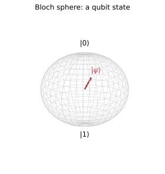

本页目录
量子信息 I · Qubit、纠缠与 Bell 不等式
对标：Nielsen & Chuang §1–2 ｜ 前置：qm-01/03、aqm-03（密度矩阵）、高代/信息论线 量子信息提供一套把量子态、演化、测量与关联当作可操作资源的语言：叠加与纠缠是资源。本页立好 qubit 语言、纠缠的度量、以及 Bell 不等式：在局域性、测量独立性等明确实验假设下，某类局域隐变量模型与量子预测/实验不相容（相关基础工作获诺奖 2022）。数学主线是线性代数与概率。
学习层：四组相关计数，究竟越过了哪条界？
1. 具体情境：Alice 与 Bob 各自测一只 singlet
Alice 与 Bob 远离，各收到一只自旋 \(\frac12\) 粒子，二者制备在 singlet
每一轮中，Alice 从 \(a,a'\) 里选一个测量轴，Bob 从 \(b,b'\) 里选一个；输出编码为 \(A,B\in\{+1,-1\}\)。四种设置不是同一对粒子同时测四次，而是把许多同样制备的 pair 分成四个子样本，分别估计 \(E(a,b)\)、\(E(a,b')\)、\(E(a',b)\)、\(E(a',b')\)。CHSH 的带符号约定固定为
先预测再打开下方实验台：局域隐藏变量能否超过 \(|S|=2\)？singlet 的最优角度会给出正还是负的 \(S\)？把 shots 调到很小，偶然的 \(|\hat S|>2\) 应不应该直接叫作 Bell 证据？最后，Bob 改选 \(b\) 还是 \(b'\)，Alice 单独看到的 \(+\) 比例会不会改变？
2. 四本账必须分开
| 账本 | 假设 / 计算对象 | 可说的界或结论 |
|---|---|---|
| 局域隐藏变量 | 共享变量 \(\lambda\)，\(A(a,\lambda),B(b,\lambda)\in\{\pm1\}\)；并假设测量设置与 \(\lambda\) 独立。随机模型可把额外随机性并入 \(\lambda\)。 | 每个 \(\lambda\) 的 CHSH 组合是 \(\pm2\)，平均后 \(\lvert S\rvert\le2\)。这是对一类局域隐变量模型的排除，不是对所有“实在论”哲学立场的一句话裁决。 |
| 量子 singlet 预测 | 自旋测量轴夹角为 \(\Delta\) 时，\(E_{\rm QM}(a,b)=-\cos\Delta\)；联合概率为 \(P(++)=P(--)=\frac{1+E}{4}\)、\(P(+-)=P(-+)=\frac{1-E}{4}\)。 | 任意角度满足 Tsirelson 界 \(\lvert S\rvert\le2\sqrt2\)；角度 \(a=0^\circ,a'=90^\circ,b=45^\circ,b'=-45^\circ\) 时，本页符号约定给 \(S=-2\sqrt2\)，所以 \(\lvert S\rvert=2\sqrt2\)。 |
| 有限样本估计 | 每个设置有四个计数 \(N_{++},N_{+-},N_{-+},N_{--}\)，\(n=\sum N\)；\(\hat E=(N_{++}+N_{--}-N_{+-}-N_{-+})/n\)，再代入 \(\hat S\)。 | \(\hat S\) 是估计量，不是理论值；当 \(n_i\ge2\) 时本台用二项变量的 plug-in 标准误差 \(\mathrm{SE}(\hat S)\approx\sqrt{\sum_i(1-\hat E_i^2)/(n_i-1)}\) 与近似 95% 区间。\(n=0\) 或 \(1\) 时不报告标准误差/区间，避免制造虚假的确定感。 |
| no-signaling | singlet 的边缘分布 \(P(A=+\mid a,b)=P(A=+\mid a,b')=\frac12\)，Bob 同理。 | Bell 关联可以超出局域界，但不能用远端的设置改变本地单边统计；有限样本中边缘率有差异，只是统计涨落。 |
这里的“局域”还带着测量独立性等假设；Bell 实验排除的是满足这些条件的局域隐变量解释。它不等于“任何含实在性语言的解释都被逻辑上消灭”，也不等于量子纠缠可以传递可控超光速消息。
3. 先算符号，再看数据
用 \(a=0^\circ,a'=90^\circ,b=45^\circ,b'=-45^\circ\) 代入 \(E=-\cos(\Delta)\)：前三项均为 \(-1/\sqrt2\)，最后一项为 \(+1/\sqrt2\)，因此
换一种常见的 CHSH 排列会把同一个最大违反写成 \(+2\sqrt2\)；所以必须先写清楚哪一项带负号，再比较 Bell value \(|S|\)。本实验台采用自旋轴的角度：角度按 \(360^\circ\) 周期进入正弦/余弦，转 \(180^\circ\) 是把测量轴反向、同时翻转输出约定，并不与原轴等同；这不要和偏振片常见的 \(\cos(2\Delta)\) 公式混用。
4. 动手：固定 seed 的 CHSH 计数实验
实验台有四个预设：经典可达（显式局域隐藏变量 toy）、量子最优（singlet 的 \(|S|=2\sqrt2\) 角度）、非最优角（仍是 singlet，但不最大化 \(|S|\)）、有限样本/统计涨落（小 shots）。模型选择、角度与 shots 都可改；随机数 seed 固定为 20260813，所以相同输入会得到相同计数。每个设置单独抽取 shots 对，不能把四行计数当作同一批 pair 的四种反事实答案。
实验会同时显示：
- 四行的 \(++,+-,-+,--\) 联合计数与每行 \(\hat E\)；
- 带符号的 \(\hat S\)、\(|\hat S|\)、标准误差和近似置信区间，以及 \(|S|=2\) 与 \(2\sqrt2\) 的位置；
- Alice/Bob 的边缘 \(+\) 率及其差异，用来单独检查 no-signaling 的统计读法。
无 JavaScript 时的静态读法：本台使用 \(S=E(a,b)+E(a,b')+E(a',b)-E(a',b')\)，且 \(E=(N_{++}+N_{--}-N_{+-}-N_{-+})/n\)。默认角度的理论账为：
| 模型 / 角度 | \(E(a,b)\) | \(E(a,b')\) | \(E(a',b)\) | \(E(a',b')\) | \(S\) | \(|S|\) | |---|---:|---:|---:|---:|---:|---:| | 局域隐藏变量 toy；\(0,90,45,-45^\circ\) | \(-1/2\) | \(-1/2\) | \(-1/2\) | \(+1/2\) | \(-2\) | \(2\) | | singlet；\(0,90,45,-45^\circ\) | \(-1/\sqrt2\) | \(-1/\sqrt2\) | \(-1/\sqrt2\) | \(+1/\sqrt2\) | \(-2\sqrt2\) | \(2\sqrt2\) |
四组计数要按行分别求相关：若某行 \(n=0\)，该行的 \(\hat E\) 与总的 \(\hat S\) 都应写“未定义”，而不是填 0。有限样本的 \(|\hat S|>2\) 不能单独成为实验认证：对局域 toy 或理论上不违规的角度，它可能只是统计越界；对 singlet 的违规角度，它是对已越过局域界的理想理论期望的样本估计。本台没有实现真实 Bell 实验所需的探测效率、时空分离、随机设置、预注册统计检验与漏洞审计，因此它不是 loophole-free Bell 证据。
5. 边界与迁移题
先用纸笔回答：若四行都取 \(n=1\)，\(\hat E\) 能有哪些值？为什么这会让 \(\hat S\) 很不稳定，而且不能给出可靠的标准误差？再把角度全部加 \(360^\circ\)，确认理论值和固定-seed 的计数不变；只把一个轴加 \(180^\circ\)，预测对应的输出与 \(E\) 如何翻转。最后说明：为什么 \(P(A\mid a,b)=P(A\mid a,b')\) 并不意味着 \(E(a,b)=E(a,b')\)？这正是“无信号”与“无关联”之间的边界。
1. Qubit 与量子门

Qubit：二维 Hilbert 空间 \(|\psi\rangle = \alpha|0\rangle + \beta|1\rangle\)（qm-03 自旋 ½ 的抽象化——物理载体随意：自旋/偏振/超导电路）。Bloch 球：纯态 ⟺ 球面点（\(\theta, \phi\) 两实参——归一化+全局相位吃掉两个自由度）；混合态住球内（aqm-03 密度矩阵，球心 = 最大混合）。
量子门 = 酉矩阵（qm-01 演化公理的电路化）：单比特 Pauli \(X, Y, Z\)、Hadamard \(H = \frac{1}{\sqrt2}\begin{pmatrix}1&1\\1&-1\end{pmatrix}\)（造叠加的主力）、相位门；双比特 CNOT（控制翻转——造纠缠的主力）。通用性【引用】：{单比特门 + CNOT} 可逼近任意酉——量子计算的"与或非"。
两条基本定律（经典直觉的葬礼）：
- 不可克隆定理【推导】：不存在酉 \(U\) 使 \(U|\psi\rangle|0\rangle = |\psi\rangle|\psi\rangle\) 对一切 \(|\psi\rangle\)。证：对两态克隆取内积——\(\langle\psi|\phi\rangle = \langle\psi|\phi\rangle^2\) ⇒ 内积只能 0 或 1：非正交态不可克隆。\(\blacksquare\)（量子密码的守护神、纠错必须绕开的墙——qi-03）；
- 测量通常不可逆：对未知态做标准投影测量后，不能靠一个确定性物理操作恢复测量前的任意状态；弱测量的条件性“撤销”不等于普遍逆过程。信息增益与扰动的权衡需要连同测量模型一起表述【引用】。
2. 纠缠：非经典关联
Bell 态：\(|\Phi^\pm\rangle = \frac{|00\rangle \pm |11\rangle}{\sqrt2},\ |\Psi^\pm\rangle = \frac{|01\rangle \pm |10\rangle}{\sqrt2}\)——双比特最大纠缠基（aqm-03 例 2：约化到单边 = 最大混合——整体纯而局部乱：信息全在关联里）。对双体纯态，纠缠 ⟺ 不可写成直积 ⟺ 任一边约化熵 \(>0\)，这时约化 von Neumann 熵就是纠缠熵；对混合态，单边熵同时含经典混合，不能直接当作一般纠缠量。
两个"不能"划清边界：纠缠不能超光速通信（未获知远端测量结果时，对方任意局域 trace-preserving 操作都不改变本地约化态——no-signaling）；不能替代信道——但配合经典信道可做经典做不到的事：量子隐形传态【骨架】（Bell 测量 + 2 经典比特 + 单边修正 = 转移未知态——态被转移原件必毁：不可克隆的自洽），以及在预共享纠缠辅助下用 1 个 qubit 传 2 个经典 bit 的超密编码。
3. Bell 不等式（本页顶点：可检验的关联界）
EPR 的赌注：量子关联或许来自"隐藏变量"（粒子出发前已带好答案）。Bell（1964）：在定域性、测量设置与隐藏变量独立等假设下，这类模型的关联有可检验的上限。
定理（CHSH 不等式）【推导】 定域隐变量：测量结果 \(A(a, \lambda), B(b, \lambda) \in \{\pm1\}\) 由共享变量 \(\lambda\) 预定。对任意 \(\lambda\)：
（两括号必一个为 \(\pm2\) 一个为 0。）对 \(\lambda\) 平均：
量子力学的违反【推导】：单态 \(|\Psi^-\rangle\) 的关联 \(E(\mathbf a, \mathbf b) = -\mathbf a\cdot\mathbf b\)（Pauli 代数两行）；取夹角 45° 阶梯的四个方向：
\(\blacksquare\)（Tsirelson 界：\(2\sqrt2\) 是量子上限【引用】。）
实验判决（有条件）：Aspect（1982）→ 2015 年多组 loophole-free Bell test → 诺奖 2022。loophole-free 实验关闭了主要已识别的探测、局域性等实验漏洞，并在其装置与统计检验的假设下观察到 \(|S|>2\)，从而排除满足相应局域性、测量独立性等条件的局域隐变量类；这不是无前提的形而上裁决，也不单独裁决所有哲学版本的“实在论”。量子力学保住 no-signaling（不违因果），而设备无关密码学把可检验的 Bell 关联用于安全性认证【引用】。
4. 练习与要点
例 1（Bloch 球体操） \(H|0\rangle = \frac{|0\rangle + |1\rangle}{\sqrt2}\)：北极转到赤道（\(X\) 轴）；再测 \(Z\)——各半概率（qm-03 Stern–Gerlach 串联的电路版）。\(HZH = X\)（矩阵一行）——"H 把 Z 基旋成 X 基"：电路恒等式的读法入门。
例 2（隐形传态走一遍） 按协议写全四种 Bell 测量结果对应的修正门（\(I, X, Z, XZ\)）——五分钟把"科幻词"变成三行线性代数；注意原 qubit 测后即毁 + 需 2 经典比特（不超光速的显式体现）。
例 3（CHSH 数值验证） 用 \(E = -\cos\theta\) 直接代四个角度算 \(|S| = 2\sqrt2\)；再试任意角度组合确认 \(|S|\leq 2\sqrt2\)——Tsirelson 界的数值体感。\(\blacksquare\)
下一页：把资源变算力——Deutsch、Grover 与 Shor：量子算法为什么快、快在哪、以及不快在哪。